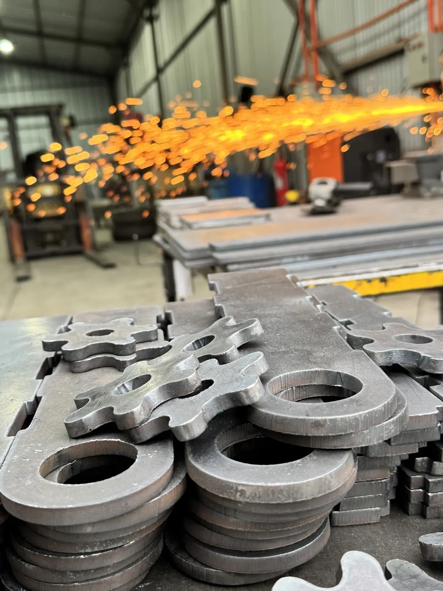
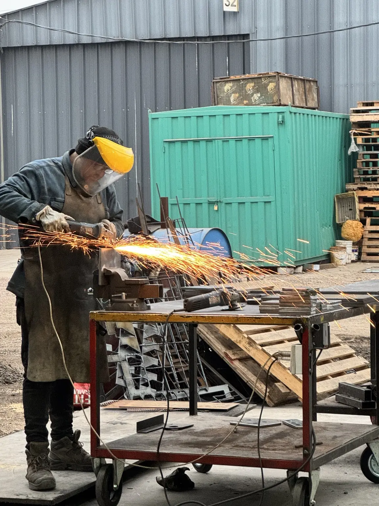

Trabajo real · Esmerilado y terminaciones
Pulido y terminación de piezas metálicas
Proceso real de desbaste y pulido para retirar rebabas, suavizar aristas y preparar piezas cortadas antes del armado o la entrega. Las imágenes muestran la pieza sujeta, el trabajo con esmeril angular y la terminación progresiva del borde.




Caso documentado
Necesidad, equipos y resultado
- Necesidad
- Eliminar rebabas y dejar bordes seguros para armado o entrega.
- Equipos
- Esmeril angular y herramientas de terminación.
- Resultado
- Piezas limpias y listas para la siguiente etapa.
Proceso ejecutado
- Revisión de la geometría y del estado de los bordes después del corte
- Sujeción segura de la pieza y selección del disco de desbaste o terminación
- Eliminación controlada de rebabas, aristas y excedentes de material
- Pulido de superficies y preparación para armado, soldadura o entrega
- Inspección visual y dimensional del acabado obtenido